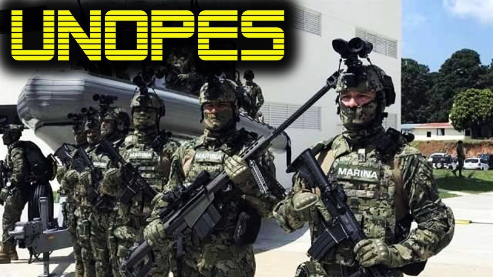

UNOPES FUERZAS ESPECIALES, nueva unidad INTEGRADA por fusileros paracaidistas ,comandoS y fes . La Armada de Mexico creo con muchas expectativas la UNOPES ( Unidad de Operaciones Especiales) que reúne a los paracaidistas,comandos y a las FES.
Un miembro de la Unidad de Operaciones Especiales (UNOPES) de la Armada de México, portando un fusil Barrett Firearms M82 A1. Este fusil emplea cartuchos de calibre . 50 BMG (Browning Machine Gun)(12.7x99 mm).
El sueldo promedio que un Escolta de Fuerza de Reacción Armada recibe por mes en México es aproximadamente de $18,395.